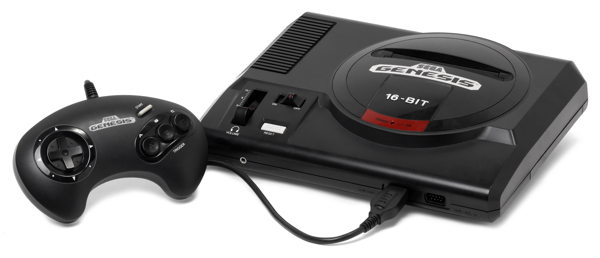
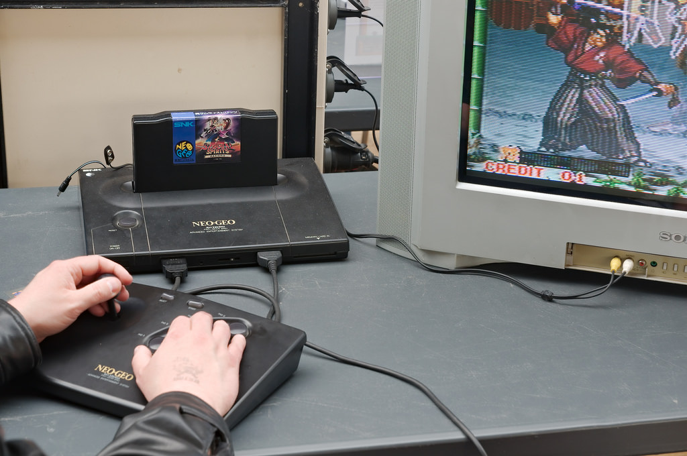
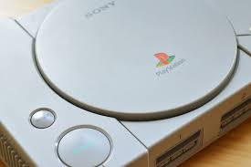
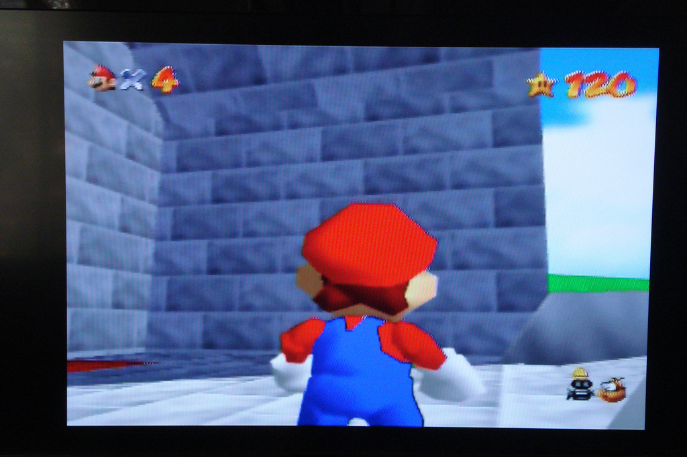

A patra generație (1987-1996)
Piața nord americană a fost dominată de Sega Genesis imediat după debutul ei în 1989. Sistemul SNES s-a dovedit a fi un rival foarte puternic încă de la apariția lui în 1991. TurboGrafx 16 al NEC a fost primul sistem pe 16 biți comercializat în America de Nord, dar din cauza lipsei unei game variate de jocuri în limba engleză și a strategiei de marketing excelente a celor de la Sega, nu a avut succes la publicul american. În Japonia s-a întâmplat exact contrariul, Turbografx 16 (în Japonia era consola era numită PC Engine) a avut mai mult succes ca Famicom (SNES) sau ca Mega Drive (Genesis). PC Engine a pierdut într-un final poziția de lider în fața Super Famicom dar datorită numărului mare de utilizatori fideli, producătorii au continuat să lanseze jocuri până la sfârșitul anilor 1990.
Unitățile CD-ROM au apărut prima dată pentru această generație de console, iar apoi pentru Mega Drive în 1991. Grafica 3D a apărut pentru prima dată pe aceste console și era posibilă doar cu ajutorul unor procesoare adiționale aflate în casetele cu jocuri. Neo-Geo a fost cea mai scumpă consolă la lansarea ei în 1990. Un atu al ei a fost o redare foarte bună a sunetului și o grafică 2D de înaltă calitate, mult mai avansată decât a competitorilor, acest lucru datorându-se hardware-ului care era același ce se găsea în jocurile arcade ale firmei SNK.
A cincea generație (1994-2002)
În 1994-1995, Sega a lansat Sega Saturn și Sony a debutat pe scena jocurilor video cu PlayStation. Ambele console foloseau tehnologie pe 32 de biti; ușa pentru dezvoltarea jocurilor 3D era deschisă. După multe amânări, Nintendo a lansat consola pe 64 de biți, Nintendo 64 în 1996, vânzând mai mult de 1,5 milioane de unități în doar trei luni.  Jocul Super Mario 64 a devenit definitoriu pentru jocurile 3D de platformă. În 1996 avându-și debutul pe PlayStation, PaRappa the Rapper a făcut popular un nou gen de jocuri în Japonia, jocurile video muzicale, Dance Dance Revolution și Beatmania urmându-i și devenind atracții omniprezente în arcade-urile Japoneze. Au fost cunoscute sub numele de jocuri Bemani, nume derivat din Beatmania.
Alte jocuri memorabile ale erei includ: GoldenEye 007 (1997) de pe Nintendo 64 care a fost aclamat de critici pentru inovațiile aduse și pentru că a fost primul First Person Shooter (FPS) de succes pentru o consolă. Trecerea seriei The Legend of Zelda de la 2D la 3D s-a făcut prin jocul The Legend of Zelda: Ocarina of Time (1998), considerat unul dintre cele mai bune jocuri vreodată.
Unul dintre jocurile populare de pe PlayStation a fost Metal Gear Solid (1998) care a pus bazele jocurilor de tip stealth. Până la sfârșitul anilor 1990, Sony a devenit un competitor de temut pe piața jocurilor video.